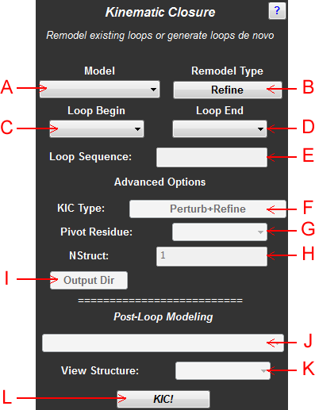

Abstract: Kinematic closure (KIC) provides an easy-to-use set of controls to either remodel existing protein loops using the KIC protocol or design new loops de novo. The user is able to supply a de novo loop sequence for new loops.

Figure 1: Schematic of the KIC panel
A: Model Menu - Use this menu to select the protein model that will undergo loop modeling
B: Remodeling Type - Select the type of loop modeling to perform. "Refine" simply performs high-resolution KIC modeling on the indicated loop. "Reconstruct" attempts to rebuild the indicated loop using the whole KIC protocol, so the loop is first modeling coarsely and then refined in high-resolution mode. "De Novo" allows you to generate a new loop given a primary sequence.
C: Loop Begin - Use this menu to indicate the N-terminal anchor of the loop that will be modeled.
D: Loop End - Use this menu to indicate the C-terminal anchor of the loop that will be modeled.
E: Loop Sequence - For de novo loop models, indicate the primary sequence of the new loop using this text control.
F: Advanced KIC Modeling Type - If performing a reconstruction or a de novo loop build, you may opt to only perform the coarse simulation followed by a rotamer repack. Select the "Centroid, Fullatom" option if this is what you need.
G: Pivot Residue - Specify which residue in the loop will serve as the pivot residue. This option defaults to a loop anchor.
H: Number of Structures - Indicate a value greater than 1 if you wish to generate multiple loop models. The extra models will be saved to the directory specified by the "output directory."
I: Output Directory - Specify the location to which extra models will be saved. If NStruct=1, then this option is ignored and the outputted structure will be loaded into PyMOL as usual.
J: Scoretype Menu - Select the specific scoretype term by which to color the residues in PyMOL.
K: Loop Structure Menu - After a KIC modeling job, this menu becomes populated with the individual residues in the new loop for easy viewing access.
L: KIC/Finalize Button - Use this button to start a KIC job or accept/reject a completed KIC job.